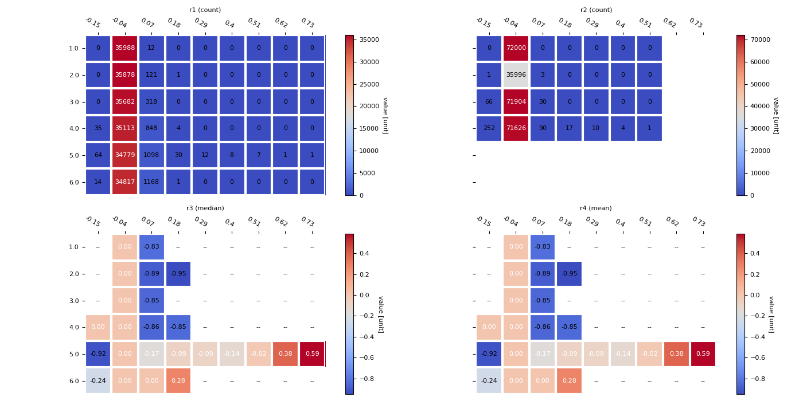

Note
Click here to download the full example code
Main 07 - 2dbin demo
Out:
Unnamed: 0 sample timestep features feature_values shap_values
0 0 0 0 Ward Lactate 0.000000 0.000652
1 1 0 0 Ward Glucose 0.000000 -0.000596
2 2 0 0 Ward sO2 0.000000 0.000231
3 3 0 0 White blood cell count, blood 0.000000 0.000582
4 4 0 0 Platelets 0.000000 -0.001705
... ... ... ... ... ... ...
251995 251995 999 6 Procalcitonin 0.000000 0.000027
251996 251996 999 6 Ferritin 0.000000 -0.001375
251997 251997 999 6 D-Dimer 0.000000 0.000045
251998 251998 999 6 sex -1.000000 -0.002359
251999 251999 999 6 age 0.169952 0.000237
[252000 rows x 6 columns]
<string>:6: UserWarning:
Warning: converting a masked element to nan.
c:\users\kelda\desktop\repositories\virtualenvs\venv-py3790-psc\lib\site-packages\matplotlib\colors.py:1211: UserWarning:
Warning: converting a masked element to nan.
c:\users\kelda\desktop\repositories\virtualenvs\venv-py3790-psc\lib\site-packages\matplotlib\ticker.py:380: FutureWarning:
Format strings passed to MaskedConstant are ignored, but in future may error or produce different behavior
7 import matplotlib
8 import numpy as np
9 import pandas as pd
10 import matplotlib as mpl
11 import matplotlib.pyplot as plt
12
13 from scipy import stats
14
15 # See https://matplotlib.org/devdocs/users/explain/customizing.html
16 mpl.rcParams['font.size'] = 8
17 mpl.rcParams['axes.titlesize'] = 8
18 mpl.rcParams['axes.labelsize'] = 8
19 mpl.rcParams['xtick.labelsize'] = 8
20 mpl.rcParams['ytick.labelsize'] = 8
21
22 def heatmap(data, row_labels, col_labels, ax=None,
23 cbar_kw=None, cbarlabel="", **kwargs):
24 """
25 Create a heatmap from a numpy array and two lists of labels.
26
27 Parameters
28 ----------
29 data
30 A 2D numpy array of shape (M, N).
31 row_labels
32 A list or array of length M with the labels for the rows.
33 col_labels
34 A list or array of length N with the labels for the columns.
35 ax
36 A `matplotlib.axes.Axes` instance to which the heatmap is plotted. If
37 not provided, use current axes or create a new one. Optional.
38 cbar_kw
39 A dictionary with arguments to `matplotlib.Figure.colorbar`. Optional.
40 cbarlabel
41 The label for the colorbar. Optional.
42 **kwargs
43 All other arguments are forwarded to `imshow`.
44 """
45
46 if ax is None:
47 ax = plt.gca()
48
49 if cbar_kw is None:
50 cbar_kw = {}
51
52 # Plot the heatmap
53 im = ax.imshow(data, **kwargs)
54
55 # Create colorbar
56 cbar = ax.figure.colorbar(im, ax=ax, **cbar_kw)
57 cbar.ax.set_ylabel(cbarlabel, rotation=-90, va="bottom")
58
59 # Show all ticks and label them with the respective list entries.
60 ax.set_xticks(np.arange(data.shape[1]), labels=col_labels)
61 ax.set_yticks(np.arange(data.shape[0]), labels=row_labels)
62
63 # Let the horizontal axes labeling appear on top.
64 ax.tick_params(top=True, bottom=False,
65 labeltop=True, labelbottom=False)
66
67 # Rotate the tick labels and set their alignment.
68 plt.setp(ax.get_xticklabels(), rotation=-30, ha="right",
69 rotation_mode="anchor")
70
71 # Turn spines off and create white grid.
72 ax.spines[:].set_visible(False)
73
74 ax.set_xticks(np.arange(data.shape[1]+1)-.5, minor=True)
75 ax.set_yticks(np.arange(data.shape[0]+1)-.5, minor=True)
76 ax.grid(which="minor", color="w", linestyle='-', linewidth=3)
77 ax.tick_params(which="minor", bottom=False, left=False)
78
79 return im, cbar
80
81
82 def annotate_heatmap(im, data=None, valfmt="{x:.2f}",
83 textcolors=("black", "white"),
84 threshold=None, **textkw):
85 """
86 A function to annotate a heatmap.
87
88 Parameters
89 ----------
90 im
91 The AxesImage to be labeled.
92 data
93 Data used to annotate. If None, the image's data is used. Optional.
94 valfmt
95 The format of the annotations inside the heatmap. This should either
96 use the string format method, e.g. "$ {x:.2f}", or be a
97 `matplotlib.ticker.Formatter`. Optional.
98 textcolors
99 A pair of colors. The first is used for values below a threshold,
100 the second for those above. Optional.
101 threshold
102 Value in data units according to which the colors from textcolors are
103 applied. If None (the default) uses the middle of the colormap as
104 separation. Optional.
105 **kwargs
106 All other arguments are forwarded to each call to `text` used to create
107 the text labels.
108 """
109
110 if not isinstance(data, (list, np.ndarray)):
111 data = im.get_array()
112
113 # Normalize the threshold to the images color range.
114 if threshold is not None:
115 threshold = im.norm(threshold)
116 else:
117 threshold = im.norm(data.max())/2.
118
119 # Set default alignment to center, but allow it to be
120 # overwritten by textkw.
121 kw = dict(horizontalalignment="center",
122 verticalalignment="center")
123 kw.update(textkw)
124
125 # Get the formatter in case a string is supplied
126 if isinstance(valfmt, str):
127 valfmt = matplotlib.ticker.StrMethodFormatter(valfmt)
128
129 # Loop over the data and create a `Text` for each "pixel".
130 # Change the text's color depending on the data.
131 texts = []
132 for i in range(data.shape[0]):
133 for j in range(data.shape[1]):
134 kw.update(color=textcolors[int(im.norm(data[i, j]) > threshold)])
135 text = im.axes.text(j, i, valfmt(data[i, j], None), **kw)
136 texts.append(text)
137
138 return texts
139
140
141 def plot_binned_statistic(r, ax, title=None, astype=None, **kwargs):
142 """Plots the binned statistic
143
144 Parameters
145 ----------
146 r: the binned statistic
147 ax: the axes to plot
148
149 Returns
150 -------
151 """
152 # Variables
153 rows, cols = r.statistic.shape
154
155 # Compute centers
156 x_center = (r.x_edge[:-1] + r.x_edge[1:]) / 2
157 y_center = (r.y_edge[:-1] + r.y_edge[1:]) / 2
158
159 # Plot heatmap (matplotlib sample, use seaborn instead)
160 im, cbar = heatmap(r.statistic,
161 np.around(x_center, 2), np.around(y_center, 2), ax=ax,
162 cmap="coolwarm", cbarlabel="value [unit]")
163 texts = annotate_heatmap(im, **kwargs)
164
165 # Configure
166 ax.set_aspect('equal', 'box')
167 if title is not None:
168 ax.set_title(title)
169
170 """
171 # Show
172 print("\n\n")
173 print(matrix)
174 print(r.x_edge)
175 print(r.y_edge)
176 print(r.binnumber)
177 print(np.flip(r.statistic, axis=1))
178 """
179
180 def data_manual():
181 """"""
182 # Create random values
183 x = np.array([1, 1, 1, 1, 2, 2, 2, 3, 4])
184 y = np.array([1, 1, 2, 2, 3, 4, 5, 6, 7])
185 z = np.array([1, 9, 9, 1, 2, 2, 2, 3, 4])
186 return x, y, z
187
188 def data_shap():
189 """"""
190 data = pd.read_csv('../../datasets/shap/shap.csv')
191 print(data)
192 return data.timestep, data.shap_values, data.feature_values
193
194
195
196
197 # Load data
198 #x, y, z = data_manual()
199 x, y, z = data_shap()
200
201 # Using np.arange
202 binx = np.arange(0, x.max()+1) + 0.5 # [0.5, 1.5, 2.5, ...., N + 0.5]
203 biny = np.arange(0, y.max()+1) + 0.5 # [0.5, 1.5, 2.5, ...., N + 0.5]
204
205 # Using np.linspace
206 biny = np.linspace(y.min(), y.max(), 10)
207
208 # Manual
209 #binx = np.arange(5) + 0.5
210 #biny = np.arange(8) + 0.5
211
212 # Compute binned statistic (count)
213 r1 = stats.binned_statistic_2d(x=x, y=y, values=None,
214 statistic='count', bins=[binx, biny],
215 expand_binnumbers=True)
216
217 # Compute binned statistic (median)
218 r2 = stats.binned_statistic_2d(x=x, y=y, values=z,
219 statistic='count', bins=[4, 7],
220 expand_binnumbers=False)
221
222 # Compute binned statistic (median)
223 r3 = stats.binned_statistic_2d(x=x, y=y, values=z,
224 statistic='median', bins=[binx, biny],
225 expand_binnumbers=False)
226
227 # Compute binned statistic (median)
228 r4 = stats.binned_statistic_2d(x=x, y=y, values=z,
229 statistic='mean', bins=[binx, biny],
230 expand_binnumbers=False)
231
232
233 # Plot
234 fig, axs = plt.subplots(nrows=2, ncols=2,
235 sharey=True, sharex=True, figsize=(14, 7))
236 plot_binned_statistic(r1, axs[0,0], title='r1 (count)', valfmt="{x:g}")
237 plot_binned_statistic(r2, axs[0,1], title='r2 (count)', valfmt="{x:g}")
238 plot_binned_statistic(r3, axs[1,0], title='r3 (median)')
239 plot_binned_statistic(r3, axs[1,1], title='r4 (mean)')
240
241 # Display
242 plt.tight_layout()
243 plt.show()
Total running time of the script: ( 0 minutes 1.139 seconds)